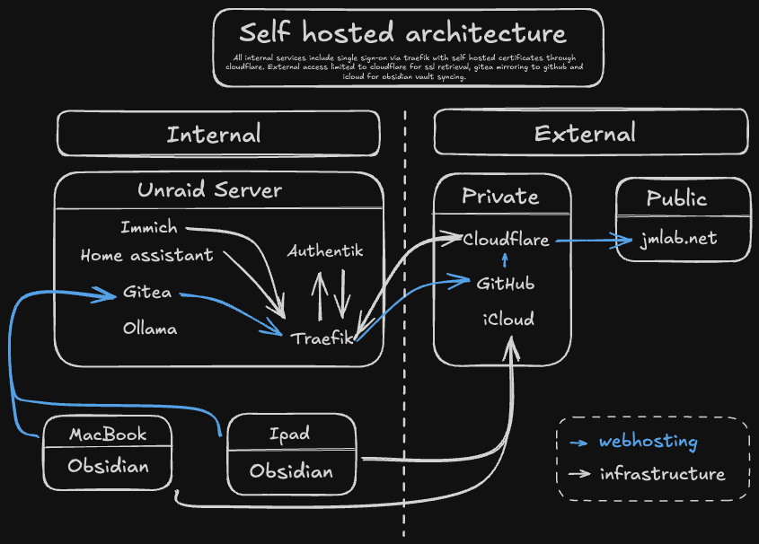

Purpose
- Self hosted backup and network storage including multi-tier storage:
- NVME Docker Drive (1TB): Host Docker Services
- NVME Cache Drive(1TB): Cache drive for Array
- Automatically moved to Array periodically
- SSD ZFS Raid-Z1 (4x2 tb): High speed local storage for requiring quick access:
- Photo Storage
- Cloud Services
- Array(Spinning Rust):
- XFS(14 tb): Primary long term storage of local files
- ZFS(14 tb): Backup from SSD Cache
- Parity Disk (20 tb)
- Privacy: Remove dependancies on google/apple cloud services
- Personal Knowledge Management
Hardware
- Unraid Server
Internal Services
- Gitea
- Home Assistant
- Ollama
- Open WebUI
- Traefik
- Immich
- Authentik
- Traefik
- Dashy
- Cups
- Obsidian
- VS-Code
External Services
- Cloudflare
- Github